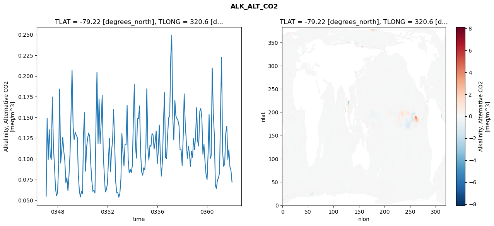
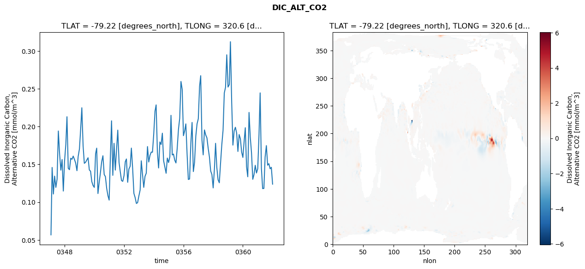
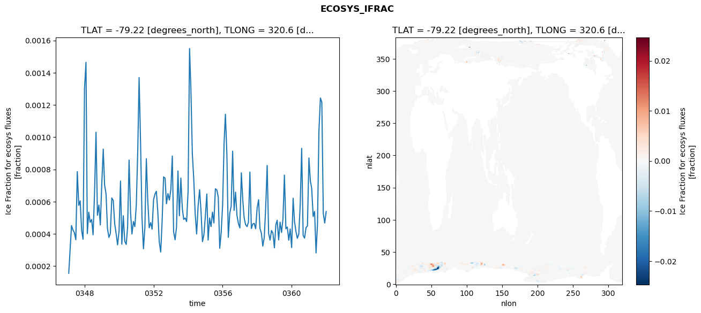
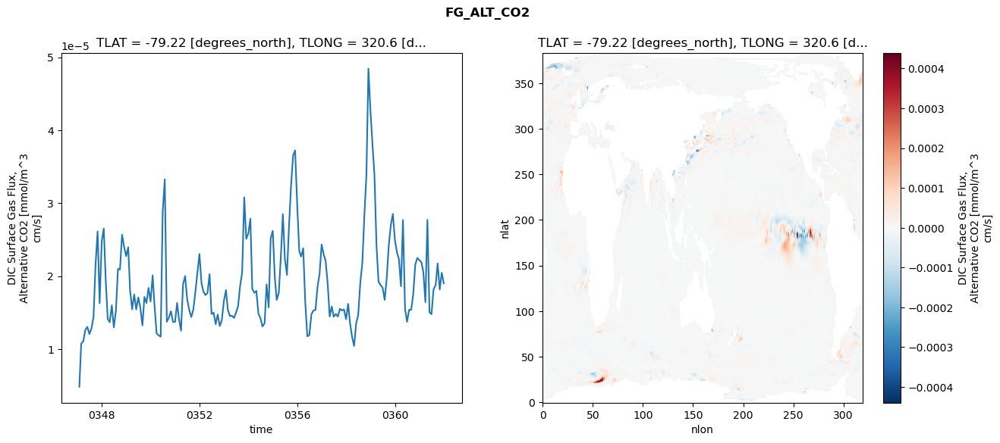

glb-dor_North_Atlantic_basin_032_1999-01-01_00128#
Simulation details#
Case: smyle.cdr-atlas-v0.glb-dor_North_Atlantic_basin_032_1999-01-01_00128.001
Basin: North_Atlantic_basin
Polygon: 32.0
Start date: 1999-01
Show code cell source Hide code cell source
import xarray as xr
import matplotlib.pyplot as plt
Show code cell source Hide code cell source
zarr_store = "/path/to/zarr/store"
# Parameters
zarr_store = "/global/cfs/projectdirs/m4746/Projects/Ocean-CDR-Atlas-v0/data/validation/smyle.cdr-atlas-v0.glb-dor_North_Atlantic_basin_032_1999-01-01_00128.001.validation.zarr"
Show code cell source Hide code cell source
%%time
ds_o = xr.open_zarr(zarr_store).compute()
ds_o
CPU times: user 641 ms, sys: 440 ms, total: 1.08 s
Wall time: 1.37 s
<xarray.Dataset> Size: 2MB
Dimensions: (nlat: 384, nlon: 320, time: 180)
Coordinates:
TLAT float64 8B -79.22
TLONG float64 8B 320.6
ULAT float64 8B -78.95
ULONG float64 8B 321.1
* time (time) object 1kB 0347-02-01 00:00:00 ... 0362-01-01 0...
z_t float32 4B 500.0
Dimensions without coordinates: nlat, nlon
Data variables:
ALK_ALT_CO2_diff (nlat, nlon) float32 492kB nan nan nan ... nan nan nan
ALK_ALT_CO2_rmse (time) float64 1kB 0.05489 0.149 ... 0.08615 0.07177
DIC_ALT_CO2_diff (nlat, nlon) float32 492kB nan nan nan ... nan nan nan
DIC_ALT_CO2_rmse (time) float64 1kB 0.05671 0.1459 ... 0.1461 0.1238
ECOSYS_IFRAC_diff (nlat, nlon) float32 492kB nan nan nan ... nan nan nan
ECOSYS_IFRAC_rmse (time) float64 1kB 0.0001557 0.0002979 ... 0.0005386
FG_ALT_CO2_diff (nlat, nlon) float32 492kB nan nan nan ... nan nan nan
FG_ALT_CO2_rmse (time) float64 1kB 4.843e-06 1.077e-05 ... 1.902e-05xarray.Dataset
- nlat: 384
- nlon: 320
- time: 180
- TLAT()float64-79.22
- long_name :
- array of t-grid latitudes
- units :
- degrees_north
array(-79.22052261)
- TLONG()float64320.6
- long_name :
- array of t-grid longitudes
- units :
- degrees_east
array(320.56250892)
- ULAT()float64-78.95
- long_name :
- array of u-grid latitudes
- units :
- degrees_north
array(-78.95289509)
- ULONG()float64321.1
- long_name :
- array of u-grid longitudes
- units :
- degrees_east
array(321.12500894)
- time(time)object0347-02-01 00:00:00 ... 0362-01-...
- bounds :
- time_bound
- long_name :
- time
array([cftime.DatetimeNoLeap(347, 2, 1, 0, 0, 0, 0, has_year_zero=True), cftime.DatetimeNoLeap(347, 3, 1, 0, 0, 0, 0, has_year_zero=True), cftime.DatetimeNoLeap(347, 4, 1, 0, 0, 0, 0, has_year_zero=True), cftime.DatetimeNoLeap(347, 5, 1, 0, 0, 0, 0, has_year_zero=True), cftime.DatetimeNoLeap(347, 6, 1, 0, 0, 0, 0, has_year_zero=True), cftime.DatetimeNoLeap(347, 7, 1, 0, 0, 0, 0, has_year_zero=True), cftime.DatetimeNoLeap(347, 8, 1, 0, 0, 0, 0, has_year_zero=True), cftime.DatetimeNoLeap(347, 9, 1, 0, 0, 0, 0, has_year_zero=True), cftime.DatetimeNoLeap(347, 10, 1, 0, 0, 0, 0, has_year_zero=True), cftime.DatetimeNoLeap(347, 11, 1, 0, 0, 0, 0, has_year_zero=True), cftime.DatetimeNoLeap(347, 12, 1, 0, 0, 0, 0, has_year_zero=True), cftime.DatetimeNoLeap(348, 1, 1, 0, 0, 0, 0, has_year_zero=True), cftime.DatetimeNoLeap(348, 2, 1, 0, 0, 0, 0, has_year_zero=True), cftime.DatetimeNoLeap(348, 3, 1, 0, 0, 0, 0, has_year_zero=True), cftime.DatetimeNoLeap(348, 4, 1, 0, 0, 0, 0, has_year_zero=True), cftime.DatetimeNoLeap(348, 5, 1, 0, 0, 0, 0, has_year_zero=True), cftime.DatetimeNoLeap(348, 6, 1, 0, 0, 0, 0, has_year_zero=True), cftime.DatetimeNoLeap(348, 7, 1, 0, 0, 0, 0, has_year_zero=True), cftime.DatetimeNoLeap(348, 8, 1, 0, 0, 0, 0, has_year_zero=True), cftime.DatetimeNoLeap(348, 9, 1, 0, 0, 0, 0, has_year_zero=True), cftime.DatetimeNoLeap(348, 10, 1, 0, 0, 0, 0, has_year_zero=True), cftime.DatetimeNoLeap(348, 11, 1, 0, 0, 0, 0, has_year_zero=True), cftime.DatetimeNoLeap(348, 12, 1, 0, 0, 0, 0, has_year_zero=True), cftime.DatetimeNoLeap(349, 1, 1, 0, 0, 0, 0, has_year_zero=True), cftime.DatetimeNoLeap(349, 2, 1, 0, 0, 0, 0, has_year_zero=True), cftime.DatetimeNoLeap(349, 3, 1, 0, 0, 0, 0, has_year_zero=True), cftime.DatetimeNoLeap(349, 4, 1, 0, 0, 0, 0, has_year_zero=True), cftime.DatetimeNoLeap(349, 5, 1, 0, 0, 0, 0, has_year_zero=True), cftime.DatetimeNoLeap(349, 6, 1, 0, 0, 0, 0, has_year_zero=True), cftime.DatetimeNoLeap(349, 7, 1, 0, 0, 0, 0, has_year_zero=True), cftime.DatetimeNoLeap(349, 8, 1, 0, 0, 0, 0, has_year_zero=True), cftime.DatetimeNoLeap(349, 9, 1, 0, 0, 0, 0, has_year_zero=True), cftime.DatetimeNoLeap(349, 10, 1, 0, 0, 0, 0, has_year_zero=True), cftime.DatetimeNoLeap(349, 11, 1, 0, 0, 0, 0, has_year_zero=True), cftime.DatetimeNoLeap(349, 12, 1, 0, 0, 0, 0, has_year_zero=True), cftime.DatetimeNoLeap(350, 1, 1, 0, 0, 0, 0, has_year_zero=True), cftime.DatetimeNoLeap(350, 2, 1, 0, 0, 0, 0, has_year_zero=True), cftime.DatetimeNoLeap(350, 3, 1, 0, 0, 0, 0, has_year_zero=True), cftime.DatetimeNoLeap(350, 4, 1, 0, 0, 0, 0, has_year_zero=True), cftime.DatetimeNoLeap(350, 5, 1, 0, 0, 0, 0, has_year_zero=True), cftime.DatetimeNoLeap(350, 6, 1, 0, 0, 0, 0, has_year_zero=True), cftime.DatetimeNoLeap(350, 7, 1, 0, 0, 0, 0, has_year_zero=True), cftime.DatetimeNoLeap(350, 8, 1, 0, 0, 0, 0, has_year_zero=True), cftime.DatetimeNoLeap(350, 9, 1, 0, 0, 0, 0, has_year_zero=True), cftime.DatetimeNoLeap(350, 10, 1, 0, 0, 0, 0, has_year_zero=True), cftime.DatetimeNoLeap(350, 11, 1, 0, 0, 0, 0, has_year_zero=True), cftime.DatetimeNoLeap(350, 12, 1, 0, 0, 0, 0, has_year_zero=True), cftime.DatetimeNoLeap(351, 1, 1, 0, 0, 0, 0, has_year_zero=True), cftime.DatetimeNoLeap(351, 2, 1, 0, 0, 0, 0, has_year_zero=True), cftime.DatetimeNoLeap(351, 3, 1, 0, 0, 0, 0, has_year_zero=True), cftime.DatetimeNoLeap(351, 4, 1, 0, 0, 0, 0, has_year_zero=True), cftime.DatetimeNoLeap(351, 5, 1, 0, 0, 0, 0, has_year_zero=True), cftime.DatetimeNoLeap(351, 6, 1, 0, 0, 0, 0, has_year_zero=True), cftime.DatetimeNoLeap(351, 7, 1, 0, 0, 0, 0, has_year_zero=True), cftime.DatetimeNoLeap(351, 8, 1, 0, 0, 0, 0, has_year_zero=True), cftime.DatetimeNoLeap(351, 9, 1, 0, 0, 0, 0, has_year_zero=True), cftime.DatetimeNoLeap(351, 10, 1, 0, 0, 0, 0, has_year_zero=True), cftime.DatetimeNoLeap(351, 11, 1, 0, 0, 0, 0, has_year_zero=True), cftime.DatetimeNoLeap(351, 12, 1, 0, 0, 0, 0, has_year_zero=True), cftime.DatetimeNoLeap(352, 1, 1, 0, 0, 0, 0, has_year_zero=True), cftime.DatetimeNoLeap(352, 2, 1, 0, 0, 0, 0, has_year_zero=True), cftime.DatetimeNoLeap(352, 3, 1, 0, 0, 0, 0, has_year_zero=True), cftime.DatetimeNoLeap(352, 4, 1, 0, 0, 0, 0, has_year_zero=True), cftime.DatetimeNoLeap(352, 5, 1, 0, 0, 0, 0, has_year_zero=True), cftime.DatetimeNoLeap(352, 6, 1, 0, 0, 0, 0, has_year_zero=True), cftime.DatetimeNoLeap(352, 7, 1, 0, 0, 0, 0, has_year_zero=True), cftime.DatetimeNoLeap(352, 8, 1, 0, 0, 0, 0, has_year_zero=True), cftime.DatetimeNoLeap(352, 9, 1, 0, 0, 0, 0, has_year_zero=True), cftime.DatetimeNoLeap(352, 10, 1, 0, 0, 0, 0, has_year_zero=True), cftime.DatetimeNoLeap(352, 11, 1, 0, 0, 0, 0, has_year_zero=True), cftime.DatetimeNoLeap(352, 12, 1, 0, 0, 0, 0, has_year_zero=True), cftime.DatetimeNoLeap(353, 1, 1, 0, 0, 0, 0, has_year_zero=True), cftime.DatetimeNoLeap(353, 2, 1, 0, 0, 0, 0, has_year_zero=True), cftime.DatetimeNoLeap(353, 3, 1, 0, 0, 0, 0, has_year_zero=True), cftime.DatetimeNoLeap(353, 4, 1, 0, 0, 0, 0, has_year_zero=True), cftime.DatetimeNoLeap(353, 5, 1, 0, 0, 0, 0, has_year_zero=True), cftime.DatetimeNoLeap(353, 6, 1, 0, 0, 0, 0, has_year_zero=True), cftime.DatetimeNoLeap(353, 7, 1, 0, 0, 0, 0, has_year_zero=True), cftime.DatetimeNoLeap(353, 8, 1, 0, 0, 0, 0, has_year_zero=True), cftime.DatetimeNoLeap(353, 9, 1, 0, 0, 0, 0, has_year_zero=True), cftime.DatetimeNoLeap(353, 10, 1, 0, 0, 0, 0, has_year_zero=True), cftime.DatetimeNoLeap(353, 11, 1, 0, 0, 0, 0, has_year_zero=True), cftime.DatetimeNoLeap(353, 12, 1, 0, 0, 0, 0, has_year_zero=True), cftime.DatetimeNoLeap(354, 1, 1, 0, 0, 0, 0, has_year_zero=True), cftime.DatetimeNoLeap(354, 2, 1, 0, 0, 0, 0, has_year_zero=True), cftime.DatetimeNoLeap(354, 3, 1, 0, 0, 0, 0, has_year_zero=True), cftime.DatetimeNoLeap(354, 4, 1, 0, 0, 0, 0, has_year_zero=True), cftime.DatetimeNoLeap(354, 5, 1, 0, 0, 0, 0, has_year_zero=True), cftime.DatetimeNoLeap(354, 6, 1, 0, 0, 0, 0, has_year_zero=True), cftime.DatetimeNoLeap(354, 7, 1, 0, 0, 0, 0, has_year_zero=True), cftime.DatetimeNoLeap(354, 8, 1, 0, 0, 0, 0, has_year_zero=True), cftime.DatetimeNoLeap(354, 9, 1, 0, 0, 0, 0, has_year_zero=True), cftime.DatetimeNoLeap(354, 10, 1, 0, 0, 0, 0, has_year_zero=True), cftime.DatetimeNoLeap(354, 11, 1, 0, 0, 0, 0, has_year_zero=True), cftime.DatetimeNoLeap(354, 12, 1, 0, 0, 0, 0, has_year_zero=True), cftime.DatetimeNoLeap(355, 1, 1, 0, 0, 0, 0, has_year_zero=True), cftime.DatetimeNoLeap(355, 2, 1, 0, 0, 0, 0, has_year_zero=True), cftime.DatetimeNoLeap(355, 3, 1, 0, 0, 0, 0, has_year_zero=True), cftime.DatetimeNoLeap(355, 4, 1, 0, 0, 0, 0, has_year_zero=True), cftime.DatetimeNoLeap(355, 5, 1, 0, 0, 0, 0, has_year_zero=True), cftime.DatetimeNoLeap(355, 6, 1, 0, 0, 0, 0, has_year_zero=True), cftime.DatetimeNoLeap(355, 7, 1, 0, 0, 0, 0, has_year_zero=True), cftime.DatetimeNoLeap(355, 8, 1, 0, 0, 0, 0, has_year_zero=True), cftime.DatetimeNoLeap(355, 9, 1, 0, 0, 0, 0, has_year_zero=True), cftime.DatetimeNoLeap(355, 10, 1, 0, 0, 0, 0, has_year_zero=True), cftime.DatetimeNoLeap(355, 11, 1, 0, 0, 0, 0, has_year_zero=True), cftime.DatetimeNoLeap(355, 12, 1, 0, 0, 0, 0, has_year_zero=True), cftime.DatetimeNoLeap(356, 1, 1, 0, 0, 0, 0, has_year_zero=True), cftime.DatetimeNoLeap(356, 2, 1, 0, 0, 0, 0, has_year_zero=True), cftime.DatetimeNoLeap(356, 3, 1, 0, 0, 0, 0, has_year_zero=True), cftime.DatetimeNoLeap(356, 4, 1, 0, 0, 0, 0, has_year_zero=True), cftime.DatetimeNoLeap(356, 5, 1, 0, 0, 0, 0, has_year_zero=True), cftime.DatetimeNoLeap(356, 6, 1, 0, 0, 0, 0, has_year_zero=True), cftime.DatetimeNoLeap(356, 7, 1, 0, 0, 0, 0, has_year_zero=True), cftime.DatetimeNoLeap(356, 8, 1, 0, 0, 0, 0, has_year_zero=True), cftime.DatetimeNoLeap(356, 9, 1, 0, 0, 0, 0, has_year_zero=True), cftime.DatetimeNoLeap(356, 10, 1, 0, 0, 0, 0, has_year_zero=True), cftime.DatetimeNoLeap(356, 11, 1, 0, 0, 0, 0, has_year_zero=True), cftime.DatetimeNoLeap(356, 12, 1, 0, 0, 0, 0, has_year_zero=True), cftime.DatetimeNoLeap(357, 1, 1, 0, 0, 0, 0, has_year_zero=True), cftime.DatetimeNoLeap(357, 2, 1, 0, 0, 0, 0, has_year_zero=True), cftime.DatetimeNoLeap(357, 3, 1, 0, 0, 0, 0, has_year_zero=True), cftime.DatetimeNoLeap(357, 4, 1, 0, 0, 0, 0, has_year_zero=True), cftime.DatetimeNoLeap(357, 5, 1, 0, 0, 0, 0, has_year_zero=True), cftime.DatetimeNoLeap(357, 6, 1, 0, 0, 0, 0, has_year_zero=True), cftime.DatetimeNoLeap(357, 7, 1, 0, 0, 0, 0, has_year_zero=True), cftime.DatetimeNoLeap(357, 8, 1, 0, 0, 0, 0, has_year_zero=True), cftime.DatetimeNoLeap(357, 9, 1, 0, 0, 0, 0, has_year_zero=True), cftime.DatetimeNoLeap(357, 10, 1, 0, 0, 0, 0, has_year_zero=True), cftime.DatetimeNoLeap(357, 11, 1, 0, 0, 0, 0, has_year_zero=True), cftime.DatetimeNoLeap(357, 12, 1, 0, 0, 0, 0, has_year_zero=True), cftime.DatetimeNoLeap(358, 1, 1, 0, 0, 0, 0, has_year_zero=True), cftime.DatetimeNoLeap(358, 2, 1, 0, 0, 0, 0, has_year_zero=True), cftime.DatetimeNoLeap(358, 3, 1, 0, 0, 0, 0, has_year_zero=True), cftime.DatetimeNoLeap(358, 4, 1, 0, 0, 0, 0, has_year_zero=True), cftime.DatetimeNoLeap(358, 5, 1, 0, 0, 0, 0, has_year_zero=True), cftime.DatetimeNoLeap(358, 6, 1, 0, 0, 0, 0, has_year_zero=True), cftime.DatetimeNoLeap(358, 7, 1, 0, 0, 0, 0, has_year_zero=True), cftime.DatetimeNoLeap(358, 8, 1, 0, 0, 0, 0, has_year_zero=True), cftime.DatetimeNoLeap(358, 9, 1, 0, 0, 0, 0, has_year_zero=True), cftime.DatetimeNoLeap(358, 10, 1, 0, 0, 0, 0, has_year_zero=True), cftime.DatetimeNoLeap(358, 11, 1, 0, 0, 0, 0, has_year_zero=True), cftime.DatetimeNoLeap(358, 12, 1, 0, 0, 0, 0, has_year_zero=True), cftime.DatetimeNoLeap(359, 1, 1, 0, 0, 0, 0, has_year_zero=True), cftime.DatetimeNoLeap(359, 2, 1, 0, 0, 0, 0, has_year_zero=True), cftime.DatetimeNoLeap(359, 3, 1, 0, 0, 0, 0, has_year_zero=True), cftime.DatetimeNoLeap(359, 4, 1, 0, 0, 0, 0, has_year_zero=True), cftime.DatetimeNoLeap(359, 5, 1, 0, 0, 0, 0, has_year_zero=True), cftime.DatetimeNoLeap(359, 6, 1, 0, 0, 0, 0, has_year_zero=True), cftime.DatetimeNoLeap(359, 7, 1, 0, 0, 0, 0, has_year_zero=True), cftime.DatetimeNoLeap(359, 8, 1, 0, 0, 0, 0, has_year_zero=True), cftime.DatetimeNoLeap(359, 9, 1, 0, 0, 0, 0, has_year_zero=True), cftime.DatetimeNoLeap(359, 10, 1, 0, 0, 0, 0, has_year_zero=True), cftime.DatetimeNoLeap(359, 11, 1, 0, 0, 0, 0, has_year_zero=True), cftime.DatetimeNoLeap(359, 12, 1, 0, 0, 0, 0, has_year_zero=True), cftime.DatetimeNoLeap(360, 1, 1, 0, 0, 0, 0, has_year_zero=True), cftime.DatetimeNoLeap(360, 2, 1, 0, 0, 0, 0, has_year_zero=True), cftime.DatetimeNoLeap(360, 3, 1, 0, 0, 0, 0, has_year_zero=True), cftime.DatetimeNoLeap(360, 4, 1, 0, 0, 0, 0, has_year_zero=True), cftime.DatetimeNoLeap(360, 5, 1, 0, 0, 0, 0, has_year_zero=True), cftime.DatetimeNoLeap(360, 6, 1, 0, 0, 0, 0, has_year_zero=True), cftime.DatetimeNoLeap(360, 7, 1, 0, 0, 0, 0, has_year_zero=True), cftime.DatetimeNoLeap(360, 8, 1, 0, 0, 0, 0, has_year_zero=True), cftime.DatetimeNoLeap(360, 9, 1, 0, 0, 0, 0, has_year_zero=True), cftime.DatetimeNoLeap(360, 10, 1, 0, 0, 0, 0, has_year_zero=True), cftime.DatetimeNoLeap(360, 11, 1, 0, 0, 0, 0, has_year_zero=True), cftime.DatetimeNoLeap(360, 12, 1, 0, 0, 0, 0, has_year_zero=True), cftime.DatetimeNoLeap(361, 1, 1, 0, 0, 0, 0, has_year_zero=True), cftime.DatetimeNoLeap(361, 2, 1, 0, 0, 0, 0, has_year_zero=True), cftime.DatetimeNoLeap(361, 3, 1, 0, 0, 0, 0, has_year_zero=True), cftime.DatetimeNoLeap(361, 4, 1, 0, 0, 0, 0, has_year_zero=True), cftime.DatetimeNoLeap(361, 5, 1, 0, 0, 0, 0, has_year_zero=True), cftime.DatetimeNoLeap(361, 6, 1, 0, 0, 0, 0, has_year_zero=True), cftime.DatetimeNoLeap(361, 7, 1, 0, 0, 0, 0, has_year_zero=True), cftime.DatetimeNoLeap(361, 8, 1, 0, 0, 0, 0, has_year_zero=True), cftime.DatetimeNoLeap(361, 9, 1, 0, 0, 0, 0, has_year_zero=True), cftime.DatetimeNoLeap(361, 10, 1, 0, 0, 0, 0, has_year_zero=True), cftime.DatetimeNoLeap(361, 11, 1, 0, 0, 0, 0, has_year_zero=True), cftime.DatetimeNoLeap(361, 12, 1, 0, 0, 0, 0, has_year_zero=True), cftime.DatetimeNoLeap(362, 1, 1, 0, 0, 0, 0, has_year_zero=True)], dtype=object) - z_t()float32500.0
- long_name :
- depth from surface to midpoint of layer
- positive :
- down
- units :
- centimeters
- valid_max :
- 537500.0
- valid_min :
- 500.0
array(500., dtype=float32)
- ALK_ALT_CO2_diff(nlat, nlon)float32nan nan nan nan ... nan nan nan nan
- cell_methods :
- time: mean
- grid_loc :
- 3111
- long_name :
- Alkalinity, Alternative CO2
- units :
- meq/m^3
array([[ nan, nan, nan, ..., nan, nan, nan], [ nan, nan, nan, ..., nan, nan, nan], [0.05249023, 0.03417969, 0.03295898, ..., nan, nan, nan], ..., [ nan, nan, nan, ..., nan, nan, nan], [ nan, nan, nan, ..., nan, nan, nan], [ nan, nan, nan, ..., nan, nan, nan]], dtype=float32) - ALK_ALT_CO2_rmse(time)float640.05489 0.149 ... 0.08615 0.07177
- cell_methods :
- time: mean
- grid_loc :
- 3111
- long_name :
- Alkalinity, Alternative CO2
- units :
- meq/m^3
array([0.05488559, 0.14898878, 0.09855763, 0.13540403, 0.10366478, 0.09914192, 0.17471281, 0.11472706, 0.09224 , 0.06439096, 0.05518669, 0.0592393 , 0.09389379, 0.18418664, 0.09471348, 0.10942392, 0.12574162, 0.10952907, 0.09797077, 0.07084475, 0.07723468, 0.06137131, 0.07982124, 0.10596261, 0.15746368, 0.20700518, 0.13926468, 0.1230115 , 0.13233403, 0.12867323, 0.1260626 , 0.08100575, 0.06114449, 0.05378816, 0.06075973, 0.05762558, 0.13119962, 0.15583763, 0.0850871 , 0.11359923, 0.12513249, 0.13111857, 0.12662931, 0.09370781, 0.07373352, 0.06065104, 0.06201287, 0.05859357, 0.14392442, 0.20437778, 0.11842608, 0.17232212, 0.11814952, 0.14272201, 0.17690375, 0.10634858, 0.08122184, 0.05992656, 0.06267433, 0.06990545, 0.09852739, 0.12439583, 0.08432127, 0.10883298, 0.12172703, 0.15964847, 0.11874871, 0.07214104, 0.05874984, 0.05923951, 0.05347699, 0.05818636, 0.07610709, 0.13064078, 0.10783695, 0.09124306, 0.11716511, 0.11701227, 0.16471236, 0.09962284, 0.08294103, 0.0871417 , 0.08311928, 0.09173762, 0.14929959, 0.18965599, 0.11716417, 0.10073991, 0.14866478, 0.14876291, 0.16379261, 0.1069332 , 0.08428151, 0.0800252 , 0.08912342, 0.08661864, 0.110399 , 0.18458336, 0.1138858 , 0.09829952, 0.11608124, 0.11503324, 0.13049384, 0.12867923, 0.11166694, 0.12061579, 0.13357352, 0.09408695, 0.10904685, 0.14079268, 0.1047503 , 0.07911023, 0.09635018, 0.14178495, 0.17989585, 0.1013515 , 0.1001016 , 0.12895301, 0.14956132, 0.15138837, 0.22315665, 0.24945597, 0.15025747, 0.12263672, 0.17080102, 0.15170113, 0.14865486, 0.14618296, 0.13992094, 0.11068702, 0.1110324 , 0.09178501, 0.12757881, 0.17845934, 0.14228049, 0.12143108, 0.10044484, 0.11523205, 0.10679207, 0.0907628 , 0.10928671, 0.10169759, 0.12447386, 0.11077072, 0.13046127, 0.16174576, 0.12118241, 0.1153033 , 0.15738745, 0.16082365, 0.14860549, 0.10543328, 0.11756052, 0.09673217, 0.08124586, 0.07490666, 0.10799141, 0.15345684, 0.10018085, 0.103842 , 0.20966233, 0.15578071, 0.12891901, 0.06753858, 0.06407543, 0.07462999, 0.07669652, 0.08335718, 0.15970881, 0.22268038, 0.10842406, 0.09084333, 0.09383938, 0.13048999, 0.13931536, 0.0993392 , 0.11089767, 0.09015359, 0.08615449, 0.07177492]) - DIC_ALT_CO2_diff(nlat, nlon)float32nan nan nan nan ... nan nan nan nan
- cell_methods :
- time: mean
- grid_loc :
- 3111
- long_name :
- Dissolved Inorganic Carbon, Alternative CO2
- units :
- mmol/m^3
array([[ nan, nan, nan, ..., nan, nan, nan], [ nan, nan, nan, ..., nan, nan, nan], [0.06054688, 0.04150391, 0.04663086, ..., nan, nan, nan], ..., [ nan, nan, nan, ..., nan, nan, nan], [ nan, nan, nan, ..., nan, nan, nan], [ nan, nan, nan, ..., nan, nan, nan]], dtype=float32) - DIC_ALT_CO2_rmse(time)float640.05671 0.1459 ... 0.1461 0.1238
- cell_methods :
- time: mean
- grid_loc :
- 3111
- long_name :
- Dissolved Inorganic Carbon, Alternative CO2
- units :
- mmol/m^3
array([0.05671315, 0.14586719, 0.11073246, 0.1344174 , 0.11951531, 0.13042507, 0.19412134, 0.16370098, 0.14233042, 0.15640936, 0.11462922, 0.15454955, 0.17679126, 0.21296665, 0.1447498 , 0.14292537, 0.15806258, 0.15665724, 0.16089952, 0.15648181, 0.15158882, 0.14159082, 0.16040988, 0.17037031, 0.19744903, 0.22484665, 0.17449779, 0.15135638, 0.15270769, 0.1558 , 0.15869188, 0.14257985, 0.14095043, 0.12710708, 0.12210382, 0.1194863 , 0.16391147, 0.17141115, 0.11136598, 0.12600844, 0.13916093, 0.15337036, 0.16134771, 0.13655924, 0.13382124, 0.1183367 , 0.10876677, 0.10268856, 0.16177138, 0.20756709, 0.13545409, 0.17785846, 0.14234199, 0.16898184, 0.19526265, 0.15252937, 0.14015121, 0.12849963, 0.12750705, 0.13497079, 0.15343882, 0.15710877, 0.12622878, 0.14373779, 0.14751113, 0.17148402, 0.14457837, 0.11152053, 0.10611863, 0.09821828, 0.09934381, 0.10817775, 0.11599486, 0.15469255, 0.13632837, 0.1195253 , 0.13417742, 0.13817202, 0.17351232, 0.15308772, 0.16177057, 0.1662301 , 0.16602931, 0.18995931, 0.22030338, 0.22862281, 0.16584494, 0.14517894, 0.17959815, 0.17624745, 0.19120357, 0.1547362 , 0.14655773, 0.13818259, 0.15832194, 0.1523638 , 0.16007848, 0.21484679, 0.16238597, 0.1635812 , 0.15546731, 0.15181151, 0.1715154 , 0.19663784, 0.21080598, 0.25965296, 0.24924873, 0.18789913, 0.19450795, 0.20350817, 0.16272766, 0.12999026, 0.13059241, 0.17775172, 0.2054391 , 0.14042824, 0.15286178, 0.18744175, 0.20346643, 0.21036685, 0.25317372, 0.26727659, 0.18207353, 0.16250437, 0.19550417, 0.18903602, 0.18499845, 0.17114297, 0.15973673, 0.14115013, 0.13649881, 0.11882122, 0.14429338, 0.17781066, 0.14570861, 0.12967565, 0.12559296, 0.15121516, 0.17585953, 0.19504207, 0.24425164, 0.25202094, 0.29489489, 0.25223093, 0.2554175 , 0.31222099, 0.23237692, 0.17543764, 0.19437012, 0.19905711, 0.19131164, 0.1670246 , 0.18945552, 0.18374704, 0.16633078, 0.15914595, 0.18081129, 0.19843059, 0.14680908, 0.13355362, 0.21867094, 0.18637642, 0.16521042, 0.13021917, 0.13638042, 0.14869986, 0.13850708, 0.14419877, 0.18947194, 0.24452085, 0.14489753, 0.11787735, 0.1180917 , 0.15964467, 0.17478856, 0.14886082, 0.15090904, 0.14412998, 0.14607388, 0.12376787]) - ECOSYS_IFRAC_diff(nlat, nlon)float32nan nan nan nan ... nan nan nan nan
- cell_methods :
- time: mean
- grid_loc :
- 2110
- long_name :
- Ice Fraction for ecosys fluxes
- units :
- fraction
array([[ nan, nan, nan, ..., nan, nan, nan], [ nan, nan, nan, ..., nan, nan, nan], [ 1.6707182e-04, 6.0021877e-05, -1.8125772e-04, ..., nan, nan, nan], ..., [ nan, nan, nan, ..., nan, nan, nan], [ nan, nan, nan, ..., nan, nan, nan], [ nan, nan, nan, ..., nan, nan, nan]], dtype=float32) - ECOSYS_IFRAC_rmse(time)float640.0001557 0.0002979 ... 0.0005386
- cell_methods :
- time: mean
- grid_loc :
- 2110
- long_name :
- Ice Fraction for ecosys fluxes
- units :
- fraction
array([0.00015573, 0.00029795, 0.00045182, 0.00042436, 0.0004068 , 0.00036393, 0.00078648, 0.00057696, 0.00060507, 0.00042034, 0.00036698, 0.00130231, 0.00146478, 0.0004018 , 0.00053493, 0.00047192, 0.00048917, 0.00039417, 0.00065347, 0.00103073, 0.00051541, 0.00057859, 0.00045549, 0.00071152, 0.00092643, 0.00070501, 0.00064826, 0.00043278, 0.00037797, 0.00040299, 0.00062305, 0.00060657, 0.00046298, 0.00040035, 0.00033203, 0.00041764, 0.0007281 , 0.00033606, 0.00051287, 0.00035482, 0.00033445, 0.00044118, 0.00085824, 0.00053483, 0.00039943, 0.00047649, 0.00044508, 0.00057958, 0.00092189, 0.0013701 , 0.00096699, 0.00050247, 0.00030754, 0.00043785, 0.00086634, 0.00060268, 0.00043792, 0.00047001, 0.00042929, 0.00061242, 0.00064825, 0.0006645 , 0.00053535, 0.0003502 , 0.00028756, 0.00047817, 0.00075353, 0.00074568, 0.00058686, 0.00065032, 0.00061009, 0.00067457, 0.00088324, 0.00041358, 0.00036346, 0.00044046, 0.00079032, 0.00051236, 0.00074652, 0.00055619, 0.00049003, 0.00049835, 0.00047658, 0.00066393, 0.00154996, 0.0013022 , 0.00089614, 0.00073856, 0.00052073, 0.00039945, 0.00057308, 0.00067421, 0.00054339, 0.00035155, 0.00039334, 0.00050938, 0.00064698, 0.00036168, 0.00049849, 0.00044511, 0.00053527, 0.00046762, 0.00067977, 0.00067249, 0.00062903, 0.00031069, 0.00040641, 0.00057813, 0.00096287, 0.00114229, 0.00089834, 0.0003786 , 0.00052707, 0.00057223, 0.00091305, 0.00054553, 0.00065889, 0.00051342, 0.00046467, 0.00043692, 0.00077872, 0.00061986, 0.00050009, 0.00045867, 0.00044506, 0.00047169, 0.00078354, 0.00043323, 0.00046111, 0.00046537, 0.000432 , 0.00056111, 0.00061195, 0.00043468, 0.00040406, 0.00032418, 0.00037881, 0.00056323, 0.00082455, 0.00040337, 0.00036154, 0.00042103, 0.00040398, 0.00031303, 0.00045586, 0.00048485, 0.0003627 , 0.00047302, 0.00040909, 0.00049272, 0.00076479, 0.00043153, 0.00044279, 0.00036059, 0.00043073, 0.00031471, 0.00062146, 0.00048054, 0.0004168 , 0.00037267, 0.0003986 , 0.00058098, 0.00093044, 0.00039049, 0.00037362, 0.00043899, 0.0004493 , 0.00087102, 0.00072789, 0.0006821 , 0.0005081 , 0.00053926, 0.00028201, 0.00045951, 0.00103853, 0.00124362, 0.00121602, 0.00052749, 0.00046717, 0.00053865]) - FG_ALT_CO2_diff(nlat, nlon)float32nan nan nan nan ... nan nan nan nan
- cell_methods :
- time: mean
- grid_loc :
- 2110
- long_name :
- DIC Surface Gas Flux, Alternative CO2
- units :
- mmol/m^3 cm/s
array([[ nan, nan, nan, ..., nan, nan, nan], [ nan, nan, nan, ..., nan, nan, nan], [-4.3428827e-08, -3.0950105e-08, 1.5443538e-07, ..., nan, nan, nan], ..., [ nan, nan, nan, ..., nan, nan, nan], [ nan, nan, nan, ..., nan, nan, nan], [ nan, nan, nan, ..., nan, nan, nan]], dtype=float32) - FG_ALT_CO2_rmse(time)float644.843e-06 1.077e-05 ... 1.902e-05
- cell_methods :
- time: mean
- grid_loc :
- 2110
- long_name :
- DIC Surface Gas Flux, Alternative CO2
- units :
- mmol/m^3 cm/s
array([4.84290438e-06, 1.07665396e-05, 1.10821339e-05, 1.26369237e-05, 1.30421361e-05, 1.20667258e-05, 1.28324498e-05, 1.44272148e-05, 2.15495671e-05, 2.61370413e-05, 1.62888947e-05, 2.47680718e-05, 2.65280202e-05, 1.96944681e-05, 1.41134004e-05, 1.36953214e-05, 1.60044164e-05, 1.29790844e-05, 1.52103149e-05, 2.09914732e-05, 2.09067937e-05, 2.56787600e-05, 2.40871429e-05, 2.27445261e-05, 2.39456010e-05, 1.80537649e-05, 1.54629593e-05, 1.74770999e-05, 1.54490201e-05, 1.70960824e-05, 1.56970071e-05, 1.32596369e-05, 1.71587454e-05, 1.63107893e-05, 1.83908190e-05, 1.65297299e-05, 2.01037266e-05, 1.59754120e-05, 1.21807952e-05, 1.18823903e-05, 1.17173969e-05, 2.88004691e-05, 3.32650327e-05, 1.37488909e-05, 1.43025257e-05, 1.51889753e-05, 1.37396347e-05, 1.37202715e-05, 1.63233593e-05, 1.41465053e-05, 1.25318904e-05, 1.88822082e-05, 2.00118840e-05, 1.69047162e-05, 1.53687463e-05, 1.43991084e-05, 1.53796159e-05, 1.78044839e-05, 2.04428531e-05, 2.30367746e-05, 1.89979954e-05, 1.78958368e-05, 1.74000271e-05, 1.77014617e-05, 2.02645138e-05, 1.48118816e-05, 1.49915920e-05, 1.34266453e-05, 1.47452995e-05, 1.31683668e-05, 1.39440666e-05, 1.66071312e-05, 1.80859708e-05, 1.53914743e-05, 1.45238467e-05, 1.45759744e-05, 1.42773788e-05, 1.49844065e-05, 1.58952423e-05, 1.87226899e-05, ... 2.85038662e-05, 2.23713881e-05, 2.01711487e-05, 2.69143498e-05, 3.23489955e-05, 3.65374830e-05, 3.72304513e-05, 2.97760109e-05, 2.34278212e-05, 2.26887569e-05, 2.38154168e-05, 1.65093981e-05, 1.17619940e-05, 1.19074867e-05, 1.47668419e-05, 1.53008442e-05, 1.53739159e-05, 1.85583532e-05, 2.02730119e-05, 2.43361598e-05, 2.29553575e-05, 2.21365386e-05, 1.90270530e-05, 1.44722870e-05, 1.58486016e-05, 1.44349263e-05, 1.48167588e-05, 1.44590298e-05, 1.55201161e-05, 1.52968753e-05, 1.54415800e-05, 1.41013318e-05, 1.62046856e-05, 1.35718095e-05, 1.16681994e-05, 1.04386999e-05, 1.35616919e-05, 1.46384435e-05, 1.90344020e-05, 2.18070887e-05, 2.82225141e-05, 3.39007512e-05, 4.84318586e-05, 4.25592473e-05, 3.78140142e-05, 3.38725608e-05, 2.40828856e-05, 1.92345540e-05, 1.87561975e-05, 1.84236828e-05, 1.67520564e-05, 1.98168371e-05, 2.42227211e-05, 2.70165666e-05, 2.85209662e-05, 2.49360883e-05, 2.32319122e-05, 2.23748790e-05, 1.86218156e-05, 2.77006832e-05, 1.55014336e-05, 1.37485199e-05, 1.53971281e-05, 1.53864184e-05, 1.74887019e-05, 2.16048801e-05, 2.24853532e-05, 2.22033522e-05, 2.18756300e-05, 2.05844543e-05, 1.64413848e-05, 2.77167773e-05, 1.50355604e-05, 1.47944790e-05, 1.81994366e-05, 1.87514785e-05, 2.17490487e-05, 1.81606575e-05, 2.04579866e-05, 1.90210518e-05])
- timePandasIndex
PandasIndex(CFTimeIndex([0347-02-01 00:00:00, 0347-03-01 00:00:00, 0347-04-01 00:00:00, 0347-05-01 00:00:00, 0347-06-01 00:00:00, 0347-07-01 00:00:00, 0347-08-01 00:00:00, 0347-09-01 00:00:00, 0347-10-01 00:00:00, 0347-11-01 00:00:00, ... 0361-04-01 00:00:00, 0361-05-01 00:00:00, 0361-06-01 00:00:00, 0361-07-01 00:00:00, 0361-08-01 00:00:00, 0361-09-01 00:00:00, 0361-10-01 00:00:00, 0361-11-01 00:00:00, 0361-12-01 00:00:00, 0362-01-01 00:00:00], dtype='object', length=180, calendar='noleap', freq='MS'))
Show code cell source Hide code cell source
variables = [v[:-5] for v in ds_o.variables if "_rmse" in v]
Show code cell source Hide code cell source
plt.rcParams.update({'figure.max_open_warning': 0})
for v in variables:
fig, axs = plt.subplots(1, 2, figsize=(15, 6))
ds_o[f"{v}_rmse"].plot(ax=axs[0])
ds_o[f"{v}_diff"].plot(ax=axs[1])
plt.suptitle(v, fontweight="bold")



